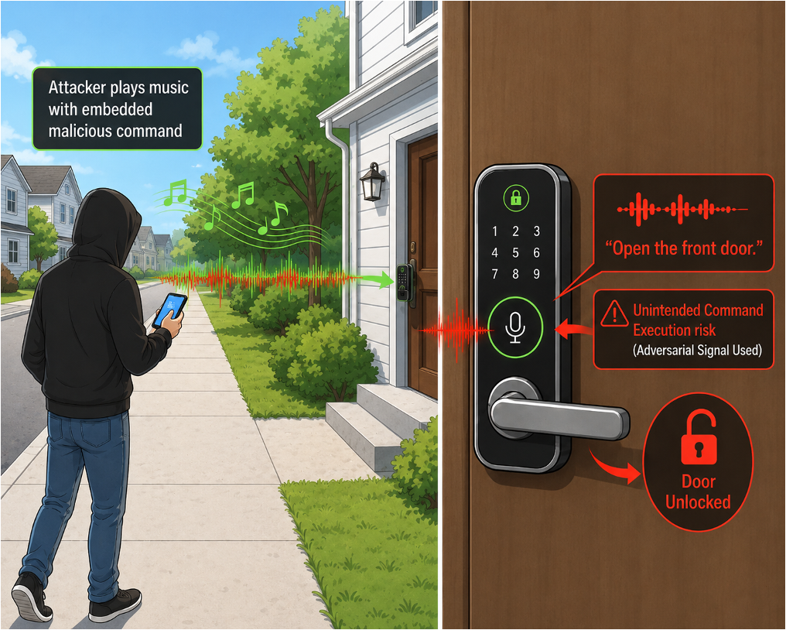
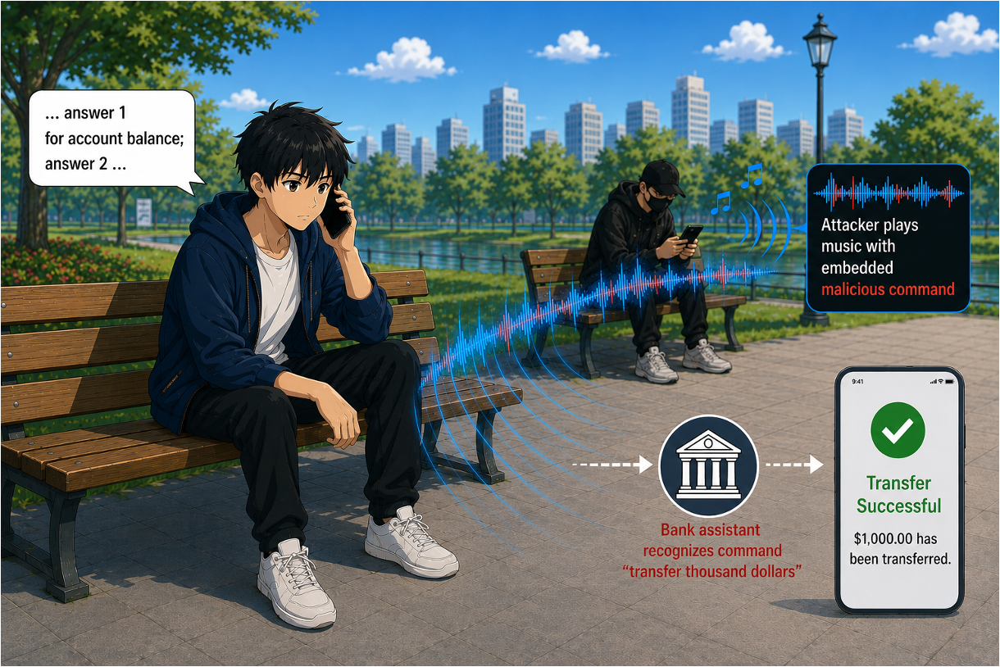

Defeating Adversarial Attacks via Numerous Orthogonal Variants
What is this all about?
What are the threats?
Audio adversarial examples are maliciously crafted audio clips that sound normal to human listeners yet cause automatic speech recognition (ASR) systems to produce attacker-intended outputs. Such attacks pose serious real-world threats, including hijacking smart home devices, triggering unauthorized transactions, falsifying meeting transcripts, and manipulating voice-controlled vehicles.
 |
 |
| An attacker embeds an IoT command such as "open the front door" into music clips. The audio sounds normal to nearby listeners, yet a smart door system interprets it as a valid command and unlocks the door. | An attacker injects a malicious command such as "transfer one thousand dollars" into audio played to a smart assistant. The underlying model interprets the adversarial audio as a legitimate instruction and executes an unauthorized financial transaction. |